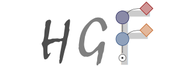

PyHGF: A Neural Network Library for Predictive Coding#
PyHGF is a Python library to create and manipulate dynamic hierarchical probabilistic networks for predictive coding. The networks can approximate Bayesian inference and optimize beliefs through the diffusion of predictions and precision-weighted prediction errors, and their structure is flexible during both observation and inference. These systems can serve as biologically plausible cognitive models for computational psychiatry and reinforcement learning or as a generalisation of Bayesian filtering to arbitrarily sized dynamic graphical structures for signal processing or decision-making agents. The default implementation supports the generalisation and nodalisation of the Hierarchical Gaussian Filters for predictive coding (gHGF, Weber et al., 2024), but the framework is flexible enough to support any possible algorithm. The library is written on top of JAX, the core functions are derivable and JIT-able whenever feasible and it is possible to sample free parameters from a network under given observations. It is conceived to facilitate manipulation and modularity, so the user can focus on modeling while interfacing smoothly with other libraries in the ecosystem for Bayesian inference or optimization. A binding with an implementation in Rust - that will provide full flexibility on structures during inference - is also under active development.
Getting started#
Installation#
The last official release can be downloaded from PIP:
pip install pyhgf
The current version under development can be installed from the master branch of the GitHub folder:
pip install “git+https://github.com/ilabcode/pyhgf.git”
How does it work?#
A dynamic hierarchical probabilistic network can be defined as a tuple containing the following variables:
The attributes (dictionary) that store each node’s states and parameters (e.g. value, precision, learning rates, volatility coupling, …).
The edges (tuple) that lists, for each node, the indexes of the parents and children.
A set of update functions. An update function receive a network tuple and returns an updated network tuple.
An update sequence (tuple) that defines the order and target of the update functions.

You can find a deeper introduction to how to create and manipulate networks under the following link:
The Generalized Hierarchical Gaussian Filter#
Generalized Hierarchical Gaussian Filters (gHGF) are specific instances of dynamic probabilistic networks where each node encodes a Gaussian distribution that inherits its value (mean) and volatility (variance) from its parent. The presentation of a new observation at the lowest level of the hierarchy (i.e., the input node) triggers a recursive update of the nodes’ belief (i.e., posterior distribution) through top-down predictions and bottom-up precision-weighted prediction errors. The resulting probabilistic network operates as a Bayesian filter, and a decision function can parametrize actions/decisions given the current beliefs. By comparing those behaviours with actual outcomes, a surprise function can be optimized over a set of free parameters. The Hierarchical Gaussian Filter for binary and continuous inputs was first described in Mathys et al. (2011, 2014), and later implemented in the Matlab HGF Toolbox (part of TAPAS (Frässle et al. 2021).
You can find a deeper introduction on how does the HGF works under the following link:
Model fitting#
Here we demonstrate how to fit forwards a two-level binary Hierarchical Gaussian filter. The input time series are binary observations using an associative learning task Iglesias et al. (2013).
from pyhgf.model import Network
from pyhgf import load_data
# Load time series example data (observations, decisions)
u, y = load_data("binary")
# Create a two-level binary HGF from scratch
hgf = (
Network()
.add_nodes(kind="binary-input")
.add_nodes(kind="binary-state", value_children=0)
.add_nodes(kind="continuous-state", value_children=1)
)
# add new observations
hgf.input_data(input_data=u)
# visualization of the belief trajectories
hgf.plot_trajectories();

from pyhgf.response import binary_softmax_inverse_temperature
# compute the model's surprise (-log(p))
# using the binary softmax with inverse temperature as the response model
surprise = hgf.surprise(
response_function=binary_softmax_inverse_temperature,
response_function_inputs=y,
response_function_parameters=4.0
)
print(f"Sum of surprises = {surprise.sum()}")
Model's surprise = 138.8992462158203
Acknowledgments#
This implementation of the Hierarchical Gaussian Filter was inspired by the original Matlab HGF Toolbox. A Julia implementation with similar aims is also available here.
References#
Mathys, C. (2011). A Bayesian foundation for individual learning under uncertainty. In Frontiers in Human Neuroscience (Vol. 5). Frontiers Media SA. https://doi.org/10.3389/fnhum.2011.00039
Mathys, C. D., Lomakina, E. I., Daunizeau, J., Iglesias, S., Brodersen, K. H., Friston, K. J., & Stephan, K. E. (2014). Uncertainty in perception and the hierarchical Gaussian filter. Frontiers in Human Neuroscience, 8. https://doi.org/10.3389/fnhum.2014.00825
Weber, L. A., Waade, P. T., Legrand, N., Møller, A. H., Stephan, K. E., & Mathys, C. (2023). The generalized Hierarchical Gaussian Filter (Version 1). arXiv. https://doi.org/10.48550/ARXIV.2305.10937
Frässle, S., Aponte, E. A., Bollmann, S., Brodersen, K. H., Do, C. T., Harrison, O. K., Harrison, S. J., Heinzle, J., Iglesias, S., Kasper, L., Lomakina, E. I., Mathys, C., Müller-Schrader, M., Pereira, I., Petzschner, F. H., Raman, S., Schöbi, D., Toussaint, B., Weber, L. A., … Stephan, K. E. (2021). TAPAS: An Open-Source Software Package for Translational Neuromodeling and Computational Psychiatry. In Frontiers in Psychiatry (Vol. 12). Frontiers Media SA. https://doi.org/10.3389/fpsyt.2021.680811